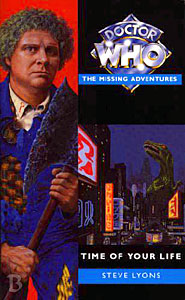

|
Time of Your Life
|
BASIC PLOT DOCTOR COMPANIONS Angela Jennings is initially welcomed on board as a new companion, but is then brutally killed. MATERIALISATION CIRCUIT Pg 31 A Terran Security Force ship, quite dilapidated. Pg 271 Back on Torrok. PREPARATORY READING CONTINUITY REFERENCES Pg 11 "Rummaging through his pockets then, he had produced a ball of string and a hook, and within moments his creation had been complete." We've seen this Doctor fish in The Two Doctors, while his habit of going fishing upon his 'retirement' has happened before, in The Androids of Tara and in Douglas Adams' original unused script which was eventually replaced by Shada. Technically he gave up fishing at the end of The Two Doctors, but as the lake is said to be unable to support piscine life, that's probably actually a continuity point. "'Early twenties, female, human. Not good so far.' 'What?' 'But black hair, not red.'" The Doctor is trying to avoid his future by, in essence, avoiding meeting Mel. Whilst, we sympathize with this desire in many ways, it may be a little silly. Pg 13 "I had a friend once, someone like you. I think she died because of me, I'm not sure. Whether she did or not, I let her down." This refers to the death of Peri as seen in Mindwarp. The Doctor is unsure as he was told that she had survived in The Ultimate Foe, and he now knows that the evidence in Mindwarp had been tampered with. Only Bad Therapy will eventually prove that Peri survived. Mention of the Time Lords and the fact that they wiped the Doctor's mind after the Trial. Which makes sense. It wouldn't be sporting on the Vervoids otherwise. "My own people. They tried me for my crimes and showed me myself as I am destined to become. All bitter and evil and twisted. I won't accept that fate." The Valeyard, obviously, and his strange identity as revealed in The Ultimate Foe. The Doctor's decision to become a recluse, as explained on this page, is also a reflection of The Twin Dilemma, after another violent episode involving Peri. We also saw a similar character, also played by Colin Baker, becoming a hermit in the Stranger video, Summoned by Shadows, which this may also be reflecting. Pgs 14-15 "The Torrok Television Company had won awards for its quality and innovation. Then MBS had set their satellite up in competition, stealing sponsorship and advertising revenue with trashy shows and bigger audiences. TTC had died, taking the independence and the aspirations of an entire planet with it." Much of this book is an angry rant at the state of British television in the mid-1990s. Given that context, the TTC is clearly the BBC of old, and MBS is either the Modern BBC or, given the reference to satellites, what was then BSkyB, but is now known as Sky Television. Pg 16 "He patted it [the TARDIS] affectionately and scowled at the black and red paint which spelt out livid Watcher slogans over its faded blue surface." The TARDIS gets graffiti all over it again, as in Paradise Towers and Aliens of London, along with a number of occasions in the books. Pg 20 Mention of Mel and Peri. Pg 21 Another avoidance of Mel moment: "'What's your memory like?' 'Okay.' 'Not photographic?' 'I don't think so.'" Pg 23 A number of the locations reference other British Television programmes, so it's more than possible that Coronation Terrace refers to the long-running British soap, Coronation Street. Pg 27 "'Your colony's come a long way in a hundred years,' he muttered. 'A pity it's headed in the wrong direction.'" A number of things in this book have a very strange resonance with the new series. Along with the mutated versions of current game shows in this and Bad Wolf, the real-time gap between The Long Game and Bad Wolf is precisely one hundred years. Reference to Florana, The Doctor and Sarah Jane's original destination in Death to the Daleks. Pg 30 Moving Day: "The Network had to shift, there was no doubt of that; such manoeuveres were essential every seven months or so, for continued broadcasting to all six planets." Again, spookily, this is not dissimilar to the solar activity which prevented broadcasting and other radio signals from transmission in Bad Wolf. Pg 31 "NORMAL SERVICE WILL BE RESUMED" is the standard BBC announcement when something goes wrong with broadcast. "I intend to stay exactly where I am until they see fit to restore my mobility." The Doctor's petulant outburst is typically Sixth Doctor, and his decision to just sit and wait is very Vengeance on Varos. Pg 32 The crank handle which opened the doors in Death to the Daleks, amongst numerous book appearances, is back. Pg 34 "I am sick of being manipulated! One day the High Council are putting me on trial, the next the Celestial Intervention Agency are forcing me to run missions for them." The CIA were first mentioned in The Deadly Assassin, and may also have connections with the Earth CIA (see The King of Terror, if you must). It's possible, given what we learn of the CIA in The Eight Doctors about how annoyed they are with the Doctor post-Trial, that they have here deliberately sent him into what is, in essence, a lose-lose situation. Pg 41 "She imagined herself captaining a beauty like this, exploring final frontiers (or however that old cliche went)." A reference to Star Trek, in case you hadn't worked it out. Pg 44 The references to the new series keep getting spookier: there is even a Wolf Broadcasting Company! Pg 48 "He had thought of the Valeyard, his own future self, and of the accusations he had made: 'The Doctor's companions have been placed in danger twice as often as the Doctor.' He remembered Peri, let down by him so badly." Trial of a Time Lord, and the Valeyard's comment is a direct quote. Pg 49 "'The Network's ruthless drive for financial efficiency has left no room whatsoever for the personal touch.' Mary giggled at the words 'personal touch.'" Of the Timeriders fans, Mary is the most obvious cliche, in that she giggles at anything that could even be mildly considered to be a double-entendre. This is Steve Lyons' comment on The Discontinuity Guide (Cornell-Day-Topping) which featured a section on Double Entendres throughout the broadcast show. Lyons rants further on the subject in The Completely Useless Encyclopedia. Pgs 50-51 In this book, Timeriders is the equivalent of Doctor Who, and the robotic Xyrons the equivalent of the Cybermen: "'You see, the tragedy of the Xyrons,' he was saying to a complete stranger, 'is that they were once as human as you or I. Their minds were transferred into artificial vessels and they steal the bodies of others in the hope of one day reversing that process. They're actually a terrific satirization of the importance we attach to outside appearances, and in some stories they were used as a political allegory on the way our society views disabled people.'" Ironically, the Xyrons sound like a rather better concept that the Cybermen themselves, although this is possibly fan wish-fulfilment, in that Roderick may be interpreting things 'up' in a way that was never intended by the writers. Pg 52 "'We're trying to organize a pantomime,' the group's front-runner said, breathlessly. 'Have you seen a purple horse with yellow spots?' 'Not since the last Intergalactic Peace Conference.'" It was actually the Third Intergalactic Peace Conference, as you'd remember if you regularly watched Frontier in Space. Pg 53 CATS turns out to be an acronym for the 'Campaign of the Advancement of Television Standards,' the equivalent of the National Viewers' and Listeners' Association. Pgs 57-58 "The Indispensable Network Guide had been a cheap profit maker, marketed planetside a few years earlier. Even then it had been inaccurate." This may well reference Jean-Marc L'Officier's never entirely accurate tome, The Programme Guide. Pg 58 "'Timeriders,' read Colin, 'has been suspended since 2189. The show was extremely popular and commercially very viable. We can only assume that MBS executives harbour a grudge against it, and we demand its reinstatement.'" And the subtext rapidly becomes the text. Timeriders was suspended exactly 200 years after the BBC cancelled Doctor Who. Note that Timeriders was 'suspended' (like the mid-Sixth Doctor era) while Doctor Who was 'cancelled' (end of the Seventh Doctor era). Pg 64 "Cornerstone had submitted a proposal for a programme to replace Timeriders. She sent a rejection, placed on a two-hour delay to make it look considered. She hated science-fiction." Giselle is channeling Michael Grade, who suspended Doctor Who in 1985, who is now in charge of the BBC again and eating humble pie. And long may he do so. Pg 68 "He protested loudly as they brought him in, yelling something about being former Lord President of a planet he'd never heard of." The Doctor was made Lord President of Gallifrey in The Five Doctors, and has recently (in The Trial of a Time Lord) discovered that he has been deposed. Pg 71 On the Xyrons: "'Funny they should use them for publicity,' said Ged, 'when they don't make Timeriders any more.'" This may refer to the BBC making ceaseless amounts of money in the 1990s in book and video releases from a programme that they no longer made and the cancellation of which had been justified, at least at one point, by stating that it didn't make any money. Pg 80 The Mary Whitehouse pastiche is brutal: "'Ban This Programme Now,' said the poster. Beneath it was the stylized 'gun-busters' logo of CATS. 'But which programme, Mrs Walker?' asked Glynda. Miriam Walker shrugged dismissively. 'Oh, all of them, dear. All of them.'" Pg 87 "I object to the entirety of the Meson Broadcasting Service's output. Your "Network" seems hellbent on ignoring its consumers in a ruthless drive for profitability. The result is a pitiful selection of programming, chosen to maximize revenue at the expense of quality and innovation." Harsh, but ultimately fair, and certainly representative of general fan opinion of the BBC in the mid-1990s. Pg 89 Mae: "If your career had been railroaded into a kids show like Timeriders -" Aspects of Mae Jordan's character are based on comments made by actress Janet Fielding (Tegan Jovanka) who described Doctor Who as having destroyed her career. In fairness to Ms Fielding, she has since relented on this opinion somewhat. Pg 93 Mention of a Timeriders communications badge relates Timeriders more to Star Trek than Doctor Who on this occasion. Pg 100 At about this point in the book, you are drawing the conclusion that everything is a target, including the worst aspects of Who itself: "Another jagged hole led back to familiar featureless corridors." The Doctor spends a ridiculous amount of time just running up and down these. Pg 101 "I haven't seen anything so advanced since the Parakon Corporation. Mind you, I haven't seen such appalling taste in programming since Varos." The Paradise of Death, Vengeance on Varos. Pg 104 "On the higher levels, shopkeepers arranged tawdry gifts and ill-researched books in their window displays." Another dig at some science-fiction merchandise. Pg 112 "'I'm sorry, Mr Kaerson, but the Programme Controller categorically said that he was not bringing Timeriders back. He said it was "cheap, childish and deeply embarrassing".' The words, in fact, were Giselle's own. She had coined them when, on her own authority, she had arranged for the Meson Broadcasting Service's most profitable product to be cancelled. 'Science fiction,' she assured the younger man, 'isn't popular.'" The allegory is still being hammered home with all the subtlety of a brick. The final phrase, which resonated through fandom at the time, was uttered by Jonathan Powell, BBC controller in 1989, to justify the cancellation of Doctor Who and the absence of science-fiction in general from the whole of the BBC's output. (Indeed, rumour has it that Star Cops was only commissioned because Powell didn't realize it was sci-fi, and, when he did, put it on in a graveyard slot on BBC 2 and did not allow a second series to be commissioned.) Pg 115 "You see, I wear that jacket for a reason - beyond my impeccable taste in matters sartorial, of course. Believe it or not, people don't tend to memorize my facial characteristics on a first meeting." It's a justification for the coat, of course, just not a very good one. Pg 117 "Maria screwed her eyes tightly closed and trembled. She was ready for the ultimate fate. Ready for teleportation." This is similar to the eviction procedure used in the reality TV series Big Brother (amongst numerous dreadful other ones), as well as being what initially appears to be going on in the new series episode Bad Wolf. Interestingly, Steve Lyons predicted both these things, as Time of Your Life predates (the UK, at least) Big Brother by five years. Pg 119 Reference to the famous comic strip character Dan Dare, in a sequence both amusing and quite disturbing. Lyons' ability to create characters from a single piece of background detail that then explains their whole way of life is extremely good. Pg 121 "It's my favourite, "The Xyron Invasion". We've just reached the monster that looks like a gigantic -" Could be Alpha Centauri, I suppose. (The Curse of Peladon, The Monster of Peladon, Legacy). Pg 127 "'What's wrong?' yelled Stuart, grabbing Grant's shoulder and pulling him around. 'Not the robot thing again?' 'I can't help it, I can't stand them.'" Grant suffers from a fear of robots, due to his background on the planet Agora, which is explained in Killing Ground. Pgs 138-139 "Stuart frowned. 'Are you sure about this? I watched that lizard thing: it had saliva, its skin rippled, you could see its muscles tensing. It'd take a programme and a half to handle all those variables. There's nothing that could do it.' 'Not on New Earth, no. But it was possible on Old Earth, even before the colonists left.'" This is certainly true of Jurassic Park. Less so of Invasion of the Dinosaurs, it has to be said. Pg 139 "'Agoran folk tales,' he answered reluctantly. 'What, metal bogeymen? Evils of progress and all that?'" More set-up for the appearance of the Cybermen in Killing Ground. Pgs 146-147 "'Do you like the Network's output, Mr Kaerson?' 'Well, not much of it...' 'But?' 'It's what the viewers want, the figures prove it.' 'An endless diet of snuff game shows, so-called children's programmes like Bloodsoak Bunny, heroes who use guns and fists over intelligence and deduction.'" Interestingly, Miriam Walker's description of what she feels programmes should be like is many people's ideal image of Doctor Who: intelligence and deduction over guns and fists. Pg 148 "Two to beam up straight away!" Star Trek, in case you hadn't guessed. Pg 151 "Like Earth's transit technology, he thought, installed during the first pushes of intergalactic colonization, outlawed soon afterward." Transit. Pg 153 "Something grabbed his ankle and he reeled, falling a second time, entangled in part-organic, part-mechanical tendrils: machine-augmented plant roots, pushing through the mud, gripping him and dragging him inexorably downwards." Hey, that's familiar. Sounds like the end of episode 13 of Trial of a Time Lord. Pg 163 "It always came down to violence, didn't it? The poison vines and acid baths of Varos; the way he had acted with Peri on Thoros-Beta; his treatment of the space mercenrary Lytton on Telos. He remembered the incident with the Vervoids, and wondered if that had actually happened yet. The Valeyard's face swam through his mind." Vengeance on Varos, The Trial of a Time Lord parts 5-8 (Mindwarp), Attack of the Cybermen, The Trial of a Time Lord parts 9-12 (Terror of the Vervoids), The Trial of a Time Lord. Pg 164 "That something else would kill the barbarian, keeping blood well off his hands? Would that make it all better? Would the means then justify the ends?" Like many of the Sixth Doctor books, this looks towards the Doctor of the NAs. Pg 177 An acid pool may be another reference to Vengeance on Varos. Pg 180 Another reference to Grant's fear of robots, presaging Killing Ground. Pg 194 "The coin was double-headed." We first see this coin in The Three Doctors. Pgs 202-203 The Doctor calls Grant Graham, George and Godfrey, briefly allowing us to reminisce about the First Doctor's inability to get Ian's name right. Pg 204 "'Do you know how to make tea?' 'I suppose so.' 'Congratulations, you've found yourself a use.'" In a twist, the male companion is now demoted to tea-making status. Remember Polly in The Moonbase? Pg 208 "'Aha. If I had a grotzit for every unimaginative populace who decided to use that name.'" Grotzits were first mentioned in The Trial of a Time Lord by Sabolom Glitz. Mention of Agora again, the location of Killing Ground. By this point, you realize that Grant is positively screaming 'I have a backstory!!!' Pg 211 "One more casualty on my road to self-destruction. If only I had realized what the Time Lords wanted, why they set me down on that ship in the first place. But I was too busy pouting and preening and jumping to all the wrong conclusions to even care." This appears to signal that a calmer, more gentle Doctor is on its way, and, in the later Sixth Doctor books, and moreso in the reinvention of the character in the Big Finish audios, this does turn out to be the case. Pg 225 More references to Agora. Killing Ground. Pg 231 The way Miriam expresses her grief at her secretary's death by being held underwater is interesting: "'Glynda, dear,' she wailed, 'what has this wicked place done to you?' A camera closed in and she stared at it, an expression of horror dawning on her features. She dropped Glynda's body and leapt for it, trying to punch it from the sky. 'You horrid thing, young children could imitate what you've just broadcast. Go away, shoo I say, shoo!'" Of all Mary Whitehouse's attacks on Doctor Who, most famous was her complaint about the end of The Deadly Assassin part three, where the Doctor is held underwater in a freeze-frame (a freeze-frame cut on some overseas transmissions and BBC repeats). Her justification was that children might attempt to imitate it. Pg 235 Reference to Peri. Pg 247 "I SAW PICTURES IN YOUR THOUGHTS, MACHINE BEINGS LIKE MYSELF. THE DALEKS AND THE CYBERMEN. 'Well, strictly speaking, they're not -' AND ONE CALLED DRATHRO, WHO LOOMED LARGEST IN YOUR MEMORIES." The Daleks, The Cybermen, obviously and Drathro from The Trial of a Time Lord, parts 1-4 (The Mysterious Planet). Pg 248 "Then learn this: life, all life, is precious." I think that's a quote from Genesis of the Daleks. I may be wrong. Pg 251 "Perhaps the most eerie aspect was the silence. He had never really noticed how the station hummed, vibrating to the noise of busy programme makers and excited onlookers. Now only his footsteps and the regular sound of his breathing disturbed the unsettling calm." There is something quite sad about the Doctor walked around deserted studios in this rant about his show's cancellation. Pg 253 Nik Calvin is an android game show presenter. Like the Anne Droid from Bad Wolf. Weird. Pg 255 "He could hear the Valeyard's laughter echoing in his eardrums." The final shot of The Trial of a Time Lord. Pg 257 The description of Torrok, and its inhabitants who are so used to endless televisiual garbage, is again reminiscent of Bad Wolf. Pg 272 "'Funny,' he said, 'I was told to beware of you as a cold-hearted, scheming manipulative bitch.'" I think that's the first time that we ever hear the Doctor using anything approaching a swear-word (and it feels odd). In his defence, he is quoting Hammond. Pgs 273-274 "It's an old Timeriders episode - one we thought had been lost." A reference to the missing episodes from the early years of Who, of course. The description of the cartoon that they're about to broadcast may presage Lyons' The Crooked World. Pg 276 More reference to Mel: "The Doctor looked at him sharply. 'You're a computer programmer, aren't you?' Grant nodded. 'Is your memory like an elephant's?' 'I've forgotten the question.'" Pg 277 Reference to the Laws of Time, dimensional transcendentalism, carrot juice (Mel) and the line 'Normal service will be resumed'. OLD FRIENDS AND OLD ENEMIES NEW FRIENDS AND NEW ENEMIES On Torrok: Clicker, Channel, Angela's Mother. On the MBS: Zed Mantelli (a clone of arrogant 'live show' presenters everywhere), Mae Jordan, Giselle, Firn Kaerson, Anson Hammond. The Time Riders fan community: Lucinda, Roderick, Mike, Colin, Ged, Richard, George and Mary. While many of these are Who fan cliches, it should be noted that, with 25% of them girls, this is well up on the Who fandom average! Miriam Walker, who is quite literally Mary Whitehouse of the National Viewers' and Listeners' Association to the point that it's nearly impossible to believe the 'All characters in this publication are fictitious and any resemblance to real persons, living or dead, is purely coincidental' blurb at the front of the book.
CONTINUITY COCK-UPS PLUGGING THE HOLES [Fan-wank theorizing of how to fix continuity cock-ups] FEATURED ALIEN RACES Godzilla makes a cameo appearance on Pg 85: "Some kind of dinosaur, a dizzying seventy feet tall, its skin green, moist and scaly and its eyes red and blazing." A giant, monster-destroying robot. Oh, please. An datavore made of living metal, created by humans, which calls itself Krllxk. A jooloo bird from Leena. A H'arthi, a cyborg with vicious instincts and a brain which is half computerized. FEATURED LOCATIONS The Meson Broadcasting Service satellite, above Meson Alpha, with the bulk of the action of the book occurring in the space of a single day (although it's not clear exactly which day). The MBS is a world in and of itself, with a shopping mall, studios galore, accommodation units of varying degrees of quality and, naturally, lots and lots of corridors to run down. Particular locations include the Programme Controller's Office, the Docking Bay, the Shopping Arcade, the Security Office and the Paradox Office on Gaslight Promenade. An ancient Terran Security Force ship, occupied by a curious and rather dangerous malevolent entity. Neo Tokyo, on the banks of the River Thames, New Earth, three systems from the MBS Satellite. (Other places on this planet include New London, New Washington and New Paris. Not the most imaginative place then. I wonder if they have a New New York.) IN SUMMARY - Anthony Wilson |
|
 |